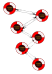
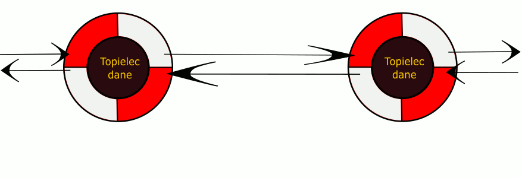
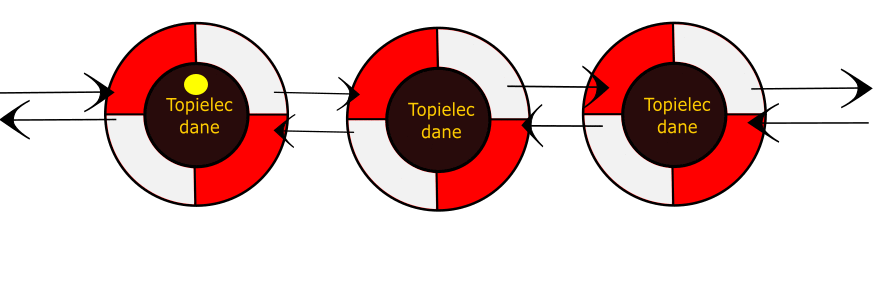
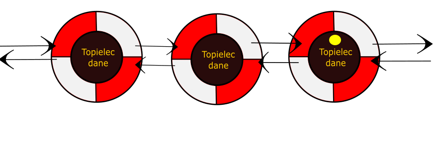
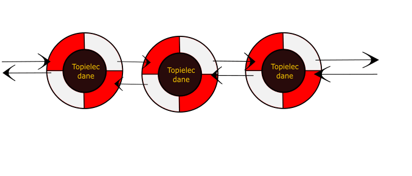

Lista Dwukierunkowa
Wprowadzenie
Wyobraź sobie że lista jednokierunkowa to ciąg połączonych ze sobą kół ratunkowych.
Koło ratunkowe zawiera:
Topielca który przechowuje dane(np. int, tablica, string, char itp.)
Linę mocująca do kolejnego koła.(wskaźnik do następnego elementu)
Linę mocująca do poprzedniego koła.(wskaźnik do poprzedniego elementu)

Cechy:
- nie możemy odnieść się do konkretnych elementów jak w tablicy, trzeba przejść przez całą listę.
- tworząc listę nie musimy wiedzieć ile będzie mieć elementów
- ostatnio element to tail i jego wskaźnik nie powinien wskazywać na nic, najlepiej ustawić go jako null/nullptr.
- pierwszy element nazywa się head
- w tej liście możemy przechodzić od końca listy, a także możemy się cofać z węzła do poprzedniego.
Dodawanie Węzła
1. Tworzymy nowe koło ratunkowe. (np. KołoRatunkowe koło13)
2. Wrzucamy do niego topielca (np. koło13.dane = jakaśDana)
3. Dołączamy do łańcucha.
W przypadku najprostszej listy na końcu doczepiany jest nowy element.
Nowowstawiony węzeł ustawia swój wskaźnik na następny i poprzedni węzeł.
Węzły poprzedzający i następujący ustawiają swoje wskaźniki na nowo wstawiony węzeł.
Lista zaimplementowana w wizualizacji przedstawia listę z sortowaniem przy wstawianiu.
Polega to na sprawdzaniu po kolei kluczy istniejących w liście i porównywaniu kluczy.
Doskonale widać to w przykładach pseudkodu i samych kodów. Nowo powstały element jest wrzucany przed element który ma większy klucz od niego.
Oczywiście będzie to przykład listy posortowanej od najmniejszego elementu do największego. Można posortować te elementy również od od największego od najmniejszego.
Dodawanie

Szukanie węzła
Tworzymy wskaźnik na pierwszy element. Następnie porównujemy klucz poszukiwany z kluczem elementu określonego przez wskaźnik.
Jeśli okaże się że to ten którego szukamy zwracamy wskaźnik na ten objekt. Wyszukanie dobiegło końca.
W innym przypadku zmieniamy wskaxnik na 2 element i tak do końca. W momencie kiedy napotkamy koniec, zwracam że takiego elementu nie ma.
Jesli szukamy po kluczach:
żółty kolor -> sprawdzamy czy klucz węzła odpowiada kluczowi poszukiwanemu.
czerwony kolor -> sprawdzany klucz różni się od poszukiwanego.
zielony kolor -> znaleziono klucz odpowadający poszukiwanemu.
Wyszukiwanie od głowy.

Wyszukiwanie od ogona

Usuwanie węzła
Tworzymy dwa wskaźniki, jeden przypisujemy do adresu pierwszego węzła.
W przypadku zaimplenetowanej listy w wizualizacji, szukamy węzła posiadający dany klucz. Po znalezieniu go zachowujemy jego adres.
To jest nasz drugi wskaźnik.
Następnie elementowi poprzedzającemu element usuwany przekazujemy wskaznik na kolejny. Przykładowo:
...-> wezel1 -> wezel2 -> wezel3 -> ...
okazuje się że wezel2 posiada klucz po którym identyfikujemy że jest to węzeł który chcieliśmy usunąć.
Powyższa operacja usuwania węzła musi doprowadzic do takiego stanu.
...->wezel1->wezel3->...
Jest również przypadek kiedy usuwany jest pierwszy element. Wtedy trzeba zapewnić żeby dotychczasowy drugi element stał się pierwszym.
wezel2->wezel3->wezel4->.....
usuwamy wezel2
wezel3->wezel4->....
Usuwanie
